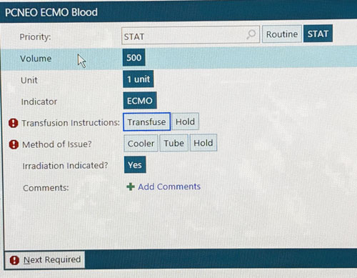

Ecmo Blood Orders
×
How to order


How to order
ecmo blood
If ECMO is initiated, the CICU Monitor Tech orders blood for:
- CICU
- PICU
(The ED, Cath lab & 5F orders their own ECMO blood.)
- First open the patient's chart in Epic.
- Next select "Manage Orders."
- On the far right of the screen select "Order-sets."
- Then type "ECMO" into the search box.
- Select "PEDS ECMO Prime Blood"
- Select "ACCEPT"
- Under circuit Prime- select the blood bank order appropriate to the patients age/weight.

- Select "TRANSFUSE"
- Select "TUBE",
(unless requested in a cooler) - Select "ACCEPT"
- Select "Request for Service"
- Select "STAT".
- Select "TODAY".
- Type the patient's blood band number.
- Type request to the appropriate tube station.
- Select "Accept"
- Select "SIGN"
- Select "WRITTEN"
- Select "ACCEPT"
- Select the Attending leading the code.
- Select "ACCEPT"
- ECMO Blood has been ordered, make sure to call blood bank.
- Make sure to let the UC/PCA know that blood has been ordered so they can relay to the charge when the ecmo checklist has been completed and so they can be waiting at the tube station, for when the blood arrives.
- There is a checklist for ordering ecmo blood in the ecmo binder in the monitor room.
- Select the BLUE tab if you need help ordering ECMO blood for a patient.
- Select the RED tab to the left if you need to order blood, and the patient does not have a blood band number.
- Select the ORANGE tab if Epic is down and you need to order ECMO blood.
- Dont forget to call blood bank after entering all ECMO blood order's!